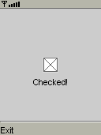

|

|
 |
PCheckBox option;
PFont font;
String msg;
void setup() {
option = new PCheckBox(false);
option.setBounds((width - 20) / 2,
(height - 20) / 2,
20, 20);
font = loadFont();
msg = "";
textFont(font);
textAlign(CENTER);
}
void draw() {
background(200);
option.draw();
fill(0);
text(msg, width / 2,
option.y + option.height + 4 + font.baseline);
}
void keyPressed() {
option.keyPressed();
}
void keyReleased() {
option.keyReleased();
}
void libraryEvent(Object library, int event, Object data) {
if (library == option) {
if (option.checked) {
msg = "Checked!";
} else {
msg = "Not checked anymore";
}
}
} |
 Reference
Reference